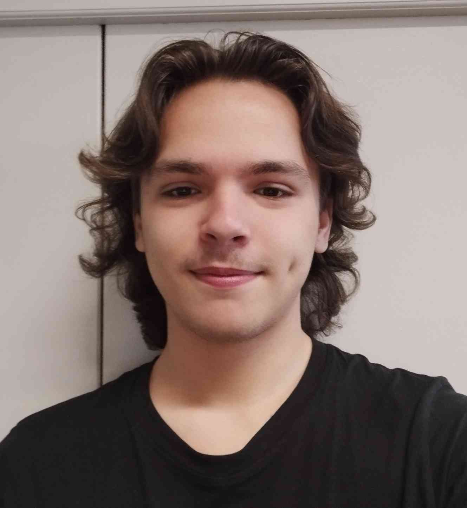

IUT d'Amiens - BUT Informatique
J'y rendorce mes compétences professionnelles et de développement.
Bonjour, je suis
Étudiant BUT Informatique · Développeur Web · Passionné de Maths
Ce site est ma version web du portfolio. Il raconte mon parcours en BUT Informatique, ce que j'ai construit et ce que j'en retiens.
Je suis en 3ème année de BUT Informatique à l'IUT d'Amiens. Ce qui me motive, c'est quand un projet répond à un vrai besoin et qu'on voit rapidement le résultat côté utilisateur.
Dans ma façon de travailler, je commence toujours par cadrer le besoin, puis j'avance par étapes courtes. Je préfère livrer une version claire qui fonctionne, puis l'améliorer, plutôt que viser la perfection dès la première passe.
Je suis plutôt à l'aise quand il faut faire le lien entre la partie technique et la partie humaine du projet. J'aime expliquer simplement ce que je fais et garder une communication directe avec l'équipe.
En dehors du code, les maths occupent une vraie place pour moi. Ça m'aide à garder une logique propre quand un sujet devient dense ou ambigu.
Ma faiblesse attachante, c'est que je peux m'attarder trop longtemps sur les détails. Le point positif, c'est que ça me pousse à rendre un travail propre, relu et assumé.

J'y rendorce mes compétences professionnelles et de développement.
Spécialités Mathématiques et Physique-Chimie.
Voici mes compétences, reliées aux attendus du Programme National du BUT Informatique et à ce que j'ai pratiqué.
J'ai participé à la conception d'une application C# divisée en différentes couches, Interface, Système et SQL. Travailler sur ce projet m'a permis d'apprendre à mieux structurer le développement avec une équipe.
Le résultat se traduit par une solution multi-projets avec des composants séparés et des livrables complets.
Ce travail en conditions réelles a couvert la migration et la refonte complète puis la maintenance d'un site e-commerce. J'ai pu y développer mon autonomie, ma communication et mes compétences en suivi global.
L'aboutissement est un site en ligne fonctionnel qui évolue grâce à des ajustements réguliers et continus.
Le projet Fumobilite m'a donné l'opportunité d'aider au découpage analytique du travail et à la clarification des rôles pour réduire les blocages au sein du groupe.
La mission LesTroisChats.net m'a appris à faire des compromis sur l'esthétique pour privilégier la rapidité d'exécution et garantir un site globalement fonctionnel en conditions réelles.
Étudiant en BUT Informatique, orienté développement web et logiciel, avec une base solide en C#, JavaScript et SQL.
Besoin de quelqu'un ? N'hésitez pas à me contacter !